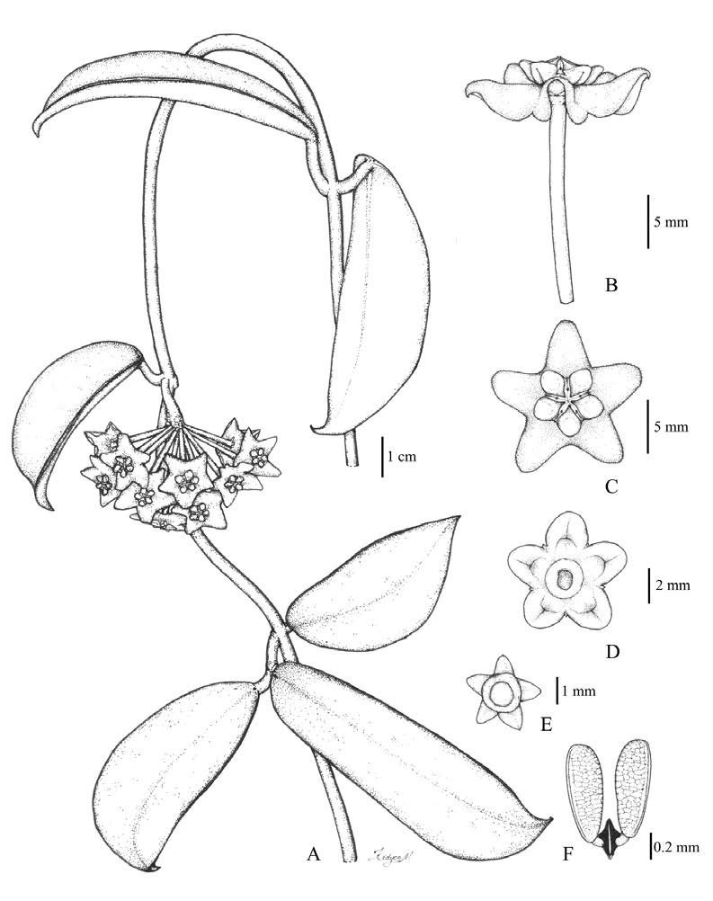

The new species ＂Hoya rostellata＂ Kidyoo (Apocynaceae: Asclepiadoideae) is described and illustrated. This plant is distributed in the western and northern parts of Thailand, usually grows on limestone rock and climbs up on tree in the forest edge. It is distinguished from the closest relative, ＂H. siamica＂ Kerr by leaf shape, leaf base, leaf apex, presence of vein and habitats.
Full text
Full text is available as a scanned copy of the original print version.
Get a printable copy (PDF file) of the
complete article, or click on a page image below to browse page by page.
Links are also available for
Selected References.
Images in this article

Fig. 1 Illustrations of Hoya rostellata Kidyoo. A: Flowering branch. B: Blooming flower, side view. C: Blooming flower, top view. D: Corona, bottom view. E: Calyx. F: Pollinarium. Drawn by Manit Kidyoo from M. Kidyoo 1590.
Fig. 2 Photographs of Hoya rostellata Kidyoo. A-B: Habitat. C: Flowering branch. D: Inflorescence with flower buds. E: Inflorescence with blooming flowers.
Fig 3 Leaves of H. rostellata and H. siamica. A-C: H. rostellata, A: top view. B: side view. C: bottom view. D-H: H. siamica, D: specimen from Khao Yai National Park (D. Tungmunnithum 7). E: specimen from Phu Luang Wildlife Sanctuary (D. Tungmunnithum 16). F: specimen from Doi Inthanon National Park (D. Tungmunnithum 52). G: specimen from Doi Inthanon National Park (D. Tungmunnithum 41). H: specimen from Doi Suthep Pui National Park (M. Kidyoo1595).